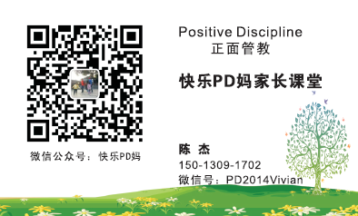

返回主页
“快乐PD妈家长课堂”联系方式

导师介绍：
Vivian：美国PDA正面管教协会注册认证家长讲师
Certified Positive Discipline Parent Educator （CPDPE）
“快乐PD妈家长课堂”微信公众号：快乐PD妈
“快乐PD妈家长课堂”微信服务号：PD2014Vivian
需要正面管教（Positive Discipline）专业教练，请加 微信公众号：快乐PD妈（二维码）
导师（Vivian）专业背景：
1）超过17年管理、培训经验工作经验
2）MBA学位，10年世界500强公司管理经验
3）顶级HR专业资格：PI Analyzer Certification, 2006
4）顶级HR专业资格：DDI Administrator（留学美国硅谷 San José）, 2007
5）儿童教育资格：Certified Positive Discipline Parent Educator (CPDPE) “注册正面管教家长讲师”, 2015
6）Vivian（CPDPE）专业背景介绍
参考：Alfred Adler（与弗洛伊德并肩的心理学大师）
私立中学的课程
version:1.0; jobnet@188.com © retter2012.com